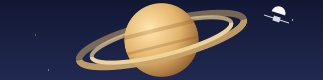

In 1977 two probes left to visit the outer planets, one after another.

Each flyby bends the probe’s path and lends it a little of the planet’s speed, so the trip to Neptune takes twelve years instead of thirty. The same trick, run backwards, slows a probe down.